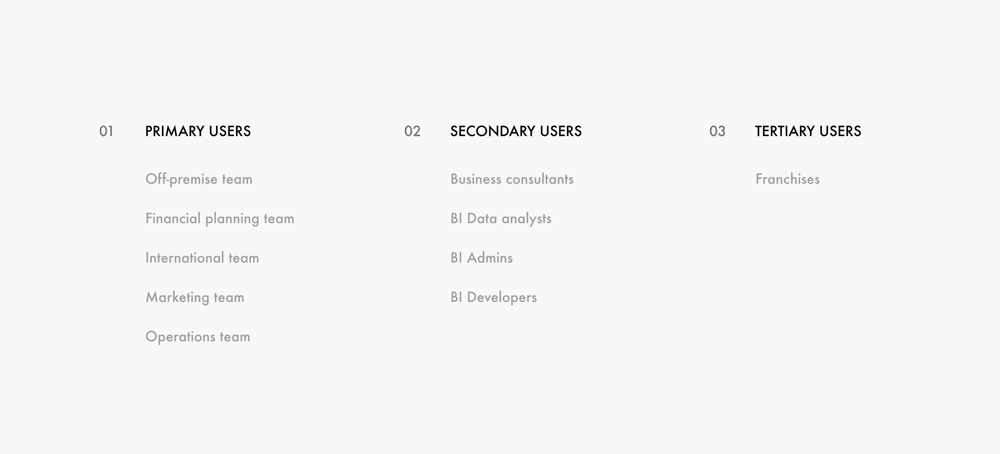

Microsoft Power BI Chatbot
I collaborated with FOCUS Brand's BI team to increase the adoption of Power BI. Designed a conversational chatbot to drive the adoption by non-technical users.
UXD Aug'18 - Dec'18 My Role - Researcher & UX Designer
Overview
FOCUS Brands had implemented Power BI to make data-driven decisions, but struggled with the adoption.
FOCUS Brands is a leading food-services global franchisor headquartered in Atlanta, Georgia. With the vision of making data-driven business decisions and planning, FOCUS Brands had established its Business Intelligence (BI) department. Since BI is a relatively new concept in FOCUS Brands, the company was facing difficulty in increasing the adoption of Power BI by its employees.
My Role
I conducted Customer Support Analysis, Conversation Modeling and Conversation UI design for the chatbot.
Design Brief!
How can we help FOCUS Brand employees better use the capabilities of Power BI and make data-driven decisions for their respective work domains?
Quick overview of the final deliverable!
- A conversational chatbot called BI Analyst
- To help non-technical users get insights using NLP
- And stay updated with BI initiatives within the organisation
Story of the project!
2 Researchers, 2 Designers, 5.5 Months, 4 Phases, 10 Interviews, JIRA Analysis, Conversation Modeling, UI Design, Evaluation & Delivery
Getting familiar with BI!
I dug Microsoft's guidelines on how we can help improve the adoption, and other research papers about issues with BI in organisational context. I also studied the current issues inhibiting enterprise wise data-driven decisions.
- Most organisations struggle with leveraging Power BI capabilities.
- BI is generally in pockets.
- Business users who are not so familiar with data analytics want insights not data.
- Analytics is done in traditional ways.
First Meeting With The Client - BI Team and the Financial Planning Team
The first round of interaction with our stakeholders helped us develop a hypothesis around the issue behind low adoption rate. These interviews helped us understand the context, organization, and expectation of the stakeholders. I spoke to the head of the Finance Team, while other teammates spoke to BI people.
Understanding the Product
With knowledge of Info-viz at hand, I studied the dashboards to make sense of it and draw product guidelines from there.
Interestingly, during this time I was also taking Information Visualisation class, and had developed fundamental understanding of issues that lead to bad visualizations. In this case, exploratory viz for people who aren't familiar with data analytics is bad. Users want insights, not data.
We found that the above dashboard either had too much information or required too much exploring. Learning curve, information overload, interaction cost - all high!
Customer Support Analysis
After we had an understanding of the product, I wanted to know how much it satisfied the expectations of the business users. I requested FOCUS Brands to share the customer support questions. They provided me with some of their JIRA snapshots.
Contextual Inquiry & Interviews
Contextual inquiry was conducted in our first on-site meeting at FOCUS Brands; consequently, it was our first time observing the real users of the dashboards. All four members of our team interviewed two people each.


Findings
Drawing from the affinity mapping, we fleshed out our design implications as follows. On the basis of the affinity mapping we also derived our user group.
- High click-depth
- Lack of trust in data.
- Information overload.
- Reluctance to new technology.
- Reliance on human help and experience.
- Reluctance to learn
Ideation & Design
We sketched a couple of solutions, and downselected the chatbot idea.
We had three major ideas : first- UI improvements in the Power BI, second - a bulletin board, and third - an intelligent analyst inspired by Cortana. Those aren't shown here to keep the case study succint and less boring :)
Why Chatbot?
- There is less of an emotional investment in the conversation: it’s easier to type a message than to interact in real time with another person.
- Reduce dependency on other people in the office and hence increase effciency.
- Leverage Q and A feature of Power BI and embed it in the Chat.
- Eliminate need to learn Power BI.
- Reduce data exploration time.
Designing the Chatbot
We decided to make an AI chatbot which would be faster and capable of replicating the human-human interaction better. We were insipired by Dr. Ashok Goyal's Jill Watson AI based Teaching Assistant which many students weren't able to detect for a long time.
I along with one more team member brainstormed the personality of the chatbot and worked on various features.
So now we had our user goals!
Based on our research, we fleshed out the conversation flow catering to the scenarios where FOCUS Brand employees needed help.
Bot Persona
Modeling the conversation flow.
Designing the Interaction Flow
Evaluation Activities
Heuristics Evaluations
Two rounds of testing were conducted to evaluate the final product of the research project. The first round was done with three expert evaluators, and the second round was done with our actual users: the employees at FOCUS Brands.
Our primary goal for conducting heuristic evaluations was to know how well the design abided to the 10 major design guidelines. We were able to recruit 3 experts, and each of them had over 3 years of experience in usability-related fields. We conducted the evaluations separately, so one participant was moderated by one of the group members per session.

Think out-loud
For think out-loud, we gave users a script and asked them to read those questions, and click the interface to immitate typing. We conducted this feedback session with two users. The two team member conducted the think-out-loud at client's office and achieved a SUS score of 0.90.
Lessons Learned
• Designing for employees sometimes can be more than just the interface or the product, it is designing in the framework of a socio-technical system, which in result makes us account for external factors like politics, culture, hierarchical relationships, motivations etc.
• Working with real clients will always have wild-cards thrown in from time to time - this happened with regards to scheduling our visit with FOCUS Brands.